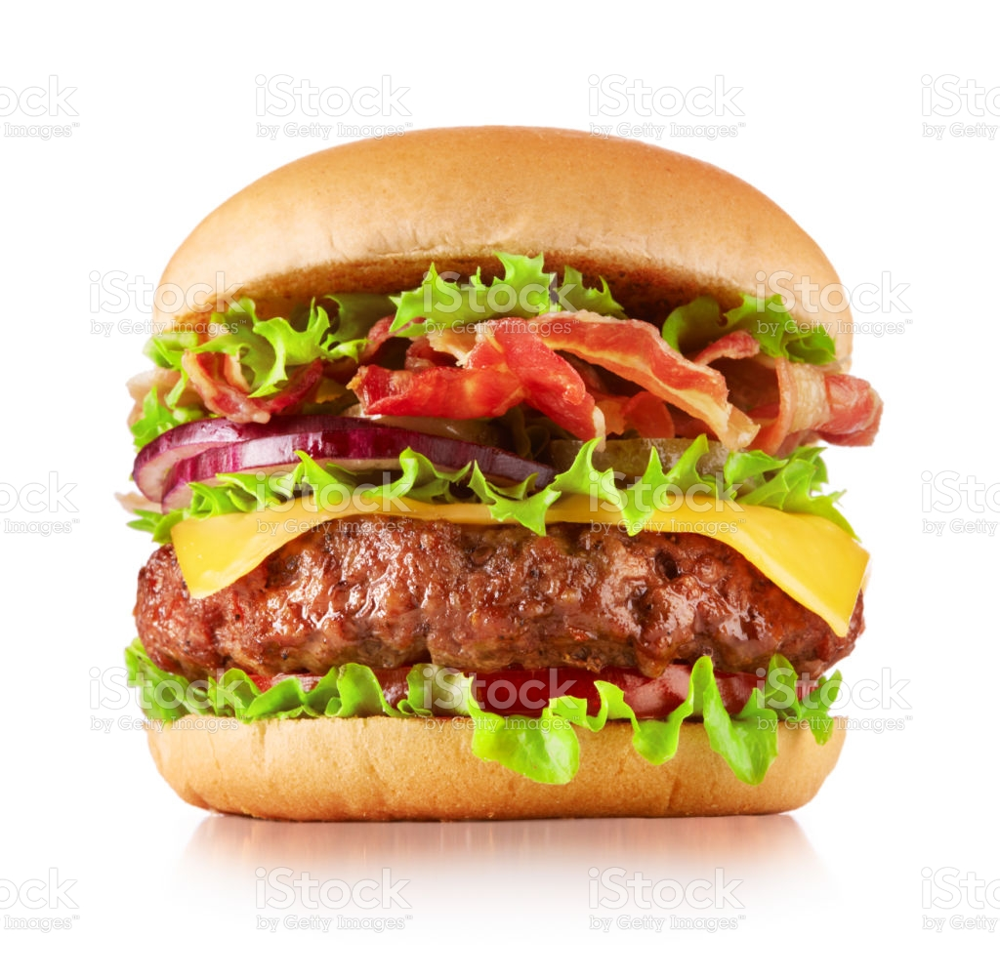

Fantastic Burger
Rendezetlen lista. UL elemmel, azon belül LI elemmel hozzuk létre.
Unordered list.
- Meat Lover
- Vegetarian
- Piedone
Rendezett lista. OL elemmel, azon belül LI elemmel hozzuk létre.
Ordered list.
Step of order
- Choose a burger
- Buy it
- Give your addres
- Eat it
Barbecued Burgers
orders
